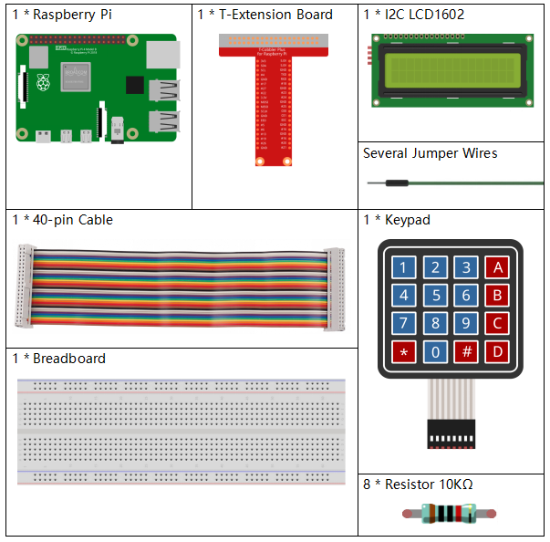

Nota
¡Hola! Bienvenido a la Comunidad de Entusiastas de SunFounder para Raspberry Pi, Arduino y ESP32 en Facebook. Profundiza tus conocimientos en Raspberry Pi, Arduino y ESP32 junto a otros entusiastas.
¿Por qué unirte?
Soporte de Expertos: Resuelve problemas postventa y desafíos técnicos con la ayuda de nuestra comunidad y equipo.
Aprende y Comparte: Intercambia consejos y tutoriales para mejorar tus habilidades.
Previsualizaciones Exclusivas: Obtén acceso anticipado a anuncios de nuevos productos y adelantos.
Descuentos Especiales: Disfruta de descuentos exclusivos en nuestros productos más recientes.
Promociones Festivas y Sorteos: Participa en sorteos y promociones de temporada.
👉 ¿Listo para explorar y crear con nosotros? ¡Haz clic en [Aquí] y únete hoy!
3.1.9 Cerradura con Contraseña
Introducción
En este proyecto, utilizaremos un teclado y una pantalla LCD para crear una cerradura de combinación. La pantalla LCD mostrará un mensaje correspondiente para que ingreses tu contraseña en el teclado. Si la contraseña es correcta, aparecerá «Correcto».
Sobre la base de este proyecto, se pueden añadir componentes electrónicos adicionales, como un zumbador o LED, para agregar diferentes efectos al ingresar la contraseña.
Componentes Necesarios
En este proyecto, necesitaremos los siguientes componentes.
{kind=link}
Diagrama del Circuito
T-Board Name |
physical |
wiringPi |
BCM |
GPIO18 |
Pin 12 |
1 |
18 |
GPIO23 |
Pin 16 |
4 |
23 |
GPIO24 |
Pin 18 |
5 |
24 |
GPIO25 |
Pin 22 |
6 |
25 |
GPIO17 |
Pin 11 |
0 |
17 |
GPIO27 |
Pin 13 |
2 |
27 |
GPIO22 |
Pin 15 |
3 |
22 |
SPIMOSI |
Pin 19 |
12 |
10 |
SDA1 |
Pin 3 |
||
SCL1 |
Pin 5 |

Procedimientos Experimentales
Paso 1: Construye el circuito.

Paso 2: Cambia el directorio.
cd ~/davinci-kit-for-raspberry-pi/python-pi5
Paso 3: Ejecuta.
sudo python3 3.1.9_PasswordLock.py
Después de ejecutar el código, utiliza el teclado para ingresar la contraseña: 1984. Si aparece «CORRECTO» en la pantalla LCD1602, la contraseña es correcta; de lo contrario, aparecerá «CONTRASEÑA INCORRECTA».
Nota
Si aparece el error
FileNotFoundError: [Errno 2] No such file or directory: '/dev/i2c-1', consulta Configuración de I2C para habilitar el I2C.Si aparece el error
ModuleNotFoundError: No module named 'smbus2', ejecutasudo pip3 install smbus2.Si aparece el error
OSError: [Errno 121] Remote I/O error, significa que el módulo está mal cableado o está dañado.Si el código y el cableado están correctos, pero la LCD aún no muestra contenido, ajusta el potenciómetro en la parte trasera para aumentar el contraste.
Advertencia
Si aparece el mensaje de error RuntimeError: Cannot determine SOC peripheral base address, consulta Si gpiozero no funciona.
Código
Nota
Puedes Modificar/Restablecer/Copiar/Ejecutar/Detener el código a continuación. Pero antes de eso, necesitas ir a la ruta del código fuente, como raphael-kit/python-pi5. Después de modificar el código, puedes ejecutarlo directamente para ver el efecto.
#!/usr/bin/env python3
from gpiozero import DigitalOutputDevice, Button
from time import sleep
import LCD1602
class Keypad:
def __init__(self, rows_pins, cols_pins, keys):
"""
Initialize the Keypad with specified row and column pins and keys.
:param rows_pins: List of GPIO pins for the rows.
:param cols_pins: List of GPIO pins for the columns.
:param keys: List of keys in the keypad layout.
"""
self.rows = [DigitalOutputDevice(pin) for pin in rows_pins] # Configuración de pines de filas
self.cols = [Button(pin, pull_up=False) for pin in cols_pins] # Configuración de pines de columnas
self.keys = keys # Diseño de las teclas del teclado
def read(self):
"""
Read and return a list of keys that are currently pressed.
:return: List of pressed keys.
"""
pressed_keys = []
for i, row in enumerate(self.rows):
row.on() # Activa la fila actual
for j, col in enumerate(self.cols):
if col.is_pressed:
index = i * len(self.cols) + j
pressed_keys.append(self.keys[index])
row.off() # Desactiva la fila después de verificar
return pressed_keys
# Configuración de verificación de contraseña
LENS = 4
password = ['1', '9', '8', '4'] # Contraseña predefinida
testword = ['0', '0', '0', '0'] # Almacenamiento de la entrada del usuario
keyIndex = 0 # Índice para las teclas ingresadas
def check():
"""
Check if the entered password matches the preset password.
:return: 1 if match, 0 otherwise.
"""
for i in range(LENS):
if password[i] != testword[i]:
return 0
return 1
def setup():
"""
Setup the keypad and LCD display.
"""
global keypad, last_key_pressed
# Configuración de pines para el teclado
rows_pins = [18, 23, 24, 25]
cols_pins = [10, 22, 27, 17]
keys = ["1", "2", "3", "A",
"4", "5", "6", "B",
"7", "8", "9", "C",
"*", "0", "#", "D"]
# Inicializar el teclado y la LCD
keypad = Keypad(rows_pins, cols_pins, keys)
last_key_pressed = []
LCD1602.init(0x27, 1) # Inicializar la LCD
LCD1602.clear()
LCD1602.write(0, 0, 'WELCOME!')
LCD1602.write(2, 1, 'Enter password')
sleep(2)
def loop():
"""
Main loop for handling keypad input and password verification.
"""
global keyIndex, LENS, keypad, last_key_pressed
while True:
pressed_keys = keypad.read()
if pressed_keys and pressed_keys != last_key_pressed:
if keyIndex < LENS:
LCD1602.clear()
LCD1602.write(0, 0, "Enter password:")
LCD1602.write(15 - keyIndex, 1, pressed_keys[0])
testword[keyIndex] = pressed_keys[0]
keyIndex += 1
if keyIndex == LENS:
if check() == 0:
LCD1602.clear()
LCD1602.write(3, 0, "WRONG KEY!")
LCD1602.write(0, 1, "please try again")
else:
LCD1602.clear()
LCD1602.write(4, 0, "CORRECT!")
LCD1602.write(2, 1, "welcome back")
keyIndex = 0 # Restablecer el índice de teclas después de verificar
last_key_pressed = pressed_keys
sleep(0.1)
try:
setup()
loop()
except KeyboardInterrupt:
LCD1602.clear() # Limpiar la pantalla LCD al interrumpir
Code Explanation
The script imports classes for managing digital output devices and buttons from the gpiozero library. It also imports the sleep function from the time module, enabling the addition of delays in the script’s execution. Additionally, the LCD1602 library is imported for controlling the LCD1602 display.
#!/usr/bin/env python3 from gpiozero import DigitalOutputDevice, Button from time import sleep import LCD1602
Defines a custom class for managing the keypad. It initializes the keypad with specified row and column pins and provides a
readmethod to detect pressed keys.class Keypad: def __init__(self, rows_pins, cols_pins, keys): """ Initialize the Keypad with specified row and column pins and keys. :param rows_pins: List of GPIO pins for the rows. :param cols_pins: List of GPIO pins for the columns. :param keys: List of keys in the keypad layout. """ self.rows = [DigitalOutputDevice(pin) for pin in rows_pins] # Row pins setup self.cols = [Button(pin, pull_up=False) for pin in cols_pins] # Column pins setup self.keys = keys # Keypad key layout def read(self): """ Read and return a list of keys that are currently pressed. :return: List of pressed keys. """ pressed_keys = [] for i, row in enumerate(self.rows): row.on() # Activate current row for j, col in enumerate(self.cols): if col.is_pressed: index = i * len(self.cols) + j pressed_keys.append(self.keys[index]) row.off() # Deactivate row after checking return pressed_keys
Sets up the password verification system.
LENSdefines the length of the password.passwordis the preset correct password, whiletestwordis used to store the user’s input.keyIndextracks the current position in the user’s input.# Password verification setup LENS = 4 password = ['1', '9', '8', '4'] # Preset password testword = ['0', '0', '0', '0'] # User input storage keyIndex = 0 # Index for input keys
Function to compare the entered password (
testword) with the preset password (password) and return the result.def check(): """ Check if the entered password matches the preset password. :return: 1 if match, 0 otherwise. """ for i in range(LENS): if password[i] != testword[i]: return 0 return 1
Initializes the keypad and LCD display. Displays a welcome message and instructions for entering the password.
def setup(): """ Setup the keypad and LCD display. """ global keypad, last_key_pressed # Pin configuration for keypad rows_pins = [18, 23, 24, 25] cols_pins = [10, 22, 27, 17] keys = ["1", "2", "3", "A", "4", "5", "6", "B", "7", "8", "9", "C", "*", "0", "#", "D"] # Initialize keypad and LCD keypad = Keypad(rows_pins, cols_pins, keys) last_key_pressed = [] LCD1602.init(0x27, 1) # Initialize LCD LCD1602.clear() LCD1602.write(0, 0, 'WELCOME!') LCD1602.write(2, 1, 'Enter password') sleep(2)
The main loop for handling keypad input and password verification. It updates the LCD display based on the entered password and provides feedback if the password is correct or incorrect.
def loop(): """ Main loop for handling keypad input and password verification. """ global keyIndex, LENS, keypad, last_key_pressed while True: pressed_keys = keypad.read() if pressed_keys and pressed_keys != last_key_pressed: if keyIndex < LENS: LCD1602.clear() LCD1602.write(0, 0, "Enter password:") LCD1602.write(15 - keyIndex, 1, pressed_keys[0]) testword[keyIndex] = pressed_keys[0] keyIndex += 1 if keyIndex == LENS: if check() == 0: LCD1602.clear() LCD1602.write(3, 0, "WRONG KEY!") LCD1602.write(0, 1, "please try again") else: LCD1602.clear() LCD1602.write(4, 0, "CORRECT!") LCD1602.write(2, 1, "welcome back") keyIndex = 0 # Reset key index after checking last_key_pressed = pressed_keys sleep(0.1)
Runs the setup and enters the main loop. Allows for a clean exit from the program using a keyboard interrupt (Ctrl+C), clearing the LCD display.
try: setup() loop() except KeyboardInterrupt: LCD1602.clear() # Clear LCD display on interrupt